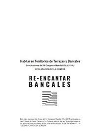

4th World Congress · Canary Islands, Spain · March 2019
Fourth Terraced Landscapes Conference
Habitar en Territorios de Terrazas y Bancales Conclusiones del IV Congreso Mundial ITLA 2019 y DECLARACIÓN DE LA GOMERA
502 views · 1,402 downloads